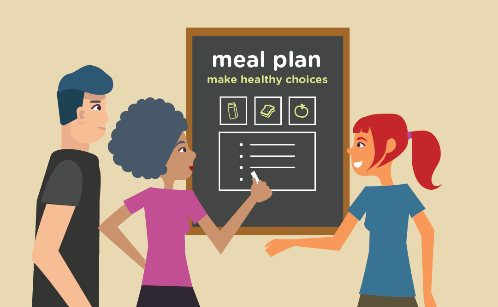

Arrive at the grocery store and take a deep breathe. Head straight to the (organic) produce section, pick-up a bag of salad mix, a tomato, a few carrots, celery, bell peppers, fennel (almost any veggies that you like will do), grab some fresh herbs like, cilantro and/or chives, grab a can of wild sardines, tuna, or salmon and a lemon.
Pay at the register and leave. When you arrive home, wash your produce and get choppin'! Squeeze some lemon on top, add salt and pepper - and voila! Dinner is served!
HINT: Remember to remain mindful and eat as slow as possible.